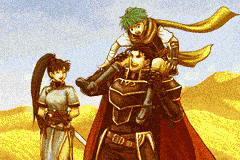

Rosters de Fire Emblem 7
Lyn
 Parcourir
Parcourir
- 4 personnages
- Disponibles à la première partie du jeu
Lyn, aussi connue sous le nom de Lyndis, est une épeiste solitaire qui a vécu avec sa tribu jusqu'à ce que celle-ci se fasse décimé par des bandits.
Elle apprend par la suite qu'elle est la petite fille du Seigneur Hausen de Caelin. Durant la quête de Lyn pour secourir son grand pêre elle rencontre plusieurs personnages pour l'aider tel que Sain et Kent.
Eliwood
 Parcourir
Parcourir
- 4 personnages
- Disponibles à la deuxième partie du jeu
Lyn, aussi connue sous le nom de Lyndis, est une épeiste solitaire qui a vécu avec sa tribu jusqu'à ce que celle-ci se fasse décimé par des bandits.
Elle apprend par la suite qu'elle est la petite fille du Seigneur Hausen de Caelin. Durant la quête de Lyn pour secourir son grand pêre elle rencontre plusieurs personnages pour l'aider tel que Sain et Kent.
Hector
 Parcourir- 4 personnages
- Disponibles à la deuxième et troisième partie du jeu
Lyn, aussi connue sous le nom de Lyndis, est une épeiste solitaire qui a vécu avec sa tribu jusqu'à ce que celle-ci se fasse décimé par des bandits.
Elle apprend par la suite qu'elle est la petite fille du Seigneur Hausen de Caelin. Durant la quête de Lyn pour secourir son grand pêre elle rencontre plusieurs personnages pour l'aider tel que Sain et Kent.